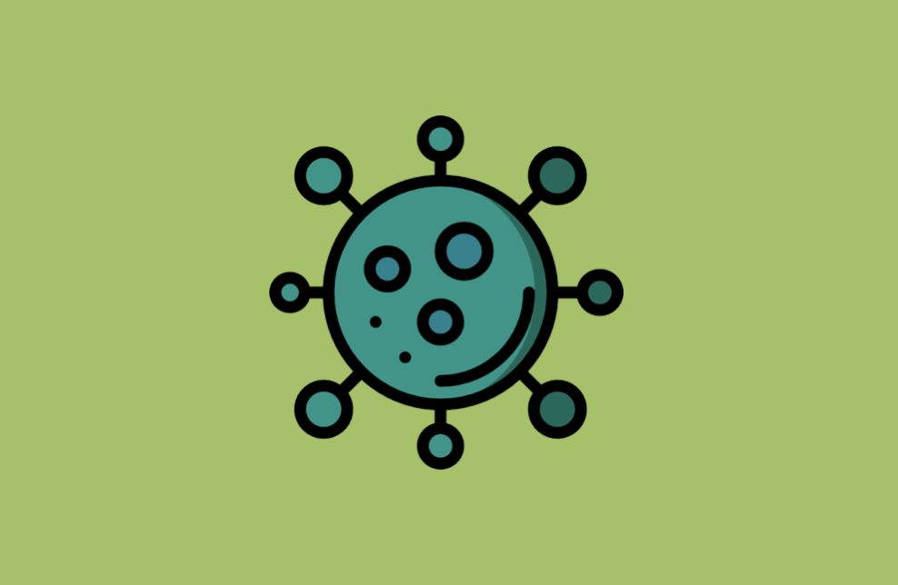
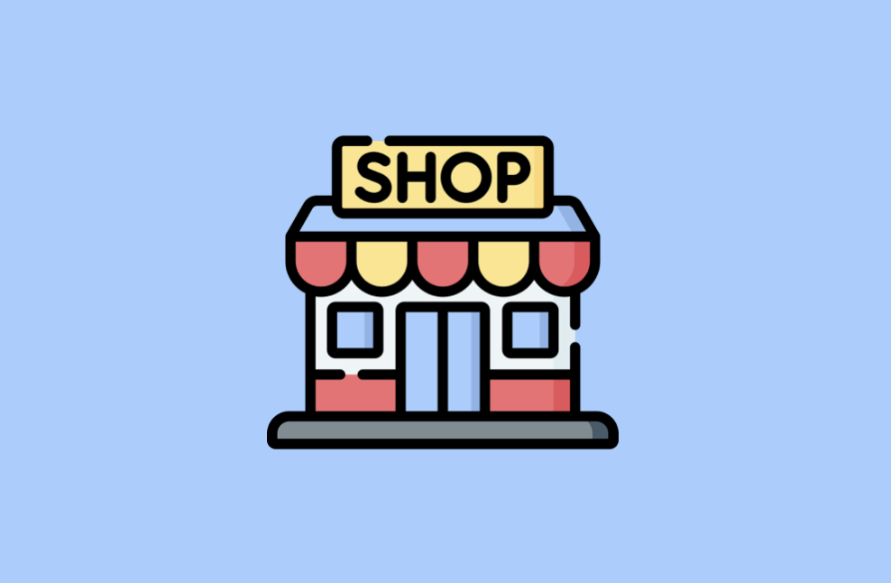
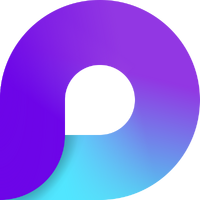
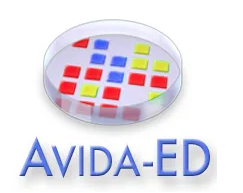

The experiments
folder.
Early ideas, happy accidents, and things I made just to see if I could. Open a file and have a look around.
11 projects. quite a few "what ifs."01 / AI & language
2 FILESCONVERSATIONAL AIGuess Who?An AI character with a mystery to solve.Open file
A conversational AI game where you interrogate a character in a murder mystery and determine whether they're the culprit.
View source on GitHub ↗NATURAL LANGUAGE GENERATIONChef rAImseyA recipe for a little artificial creativity.Open file
An AI that asks about your dessert preferences and uses probabilistic language modeling to suggest a unique recipe.
View source on GitHub ↗02 / Creative coding
3 FILESGENERATIVE STORYTELLINGMurder MysteriesA fresh whodunit, every refresh.Open file
A website that generates a new murder mystery plot every time the page is refreshed, inviting you to become the detective and solve the case.
View source on GitHub ↗GRAMMAR-BASED GENERATIONMy Awkward LyricistThe computer wrote it. I sang it.Open file
A grammar-based lyric generator that makes novel lyrics sourced from pop songs. I performed the resulting song, "Hersong."
View source on GitHub ↗Listen to Hersong on SoundCloud ↗TWITTER BOTItzYoBirthdayBecause it's somebody's birthday.Open file
A Twitter bot that celebrates every day as someone's birthday, with randomly generated birthday cakes.
Visit the original bot profile ↗03 / Web projects
3 FILESSENIOR CAPSTONEAequitasAsking better questions about fair ML.Open file
My Carleton senior capstone: a frontend where users can upload machine learning models to get a fairness estimate and explore ways to improve them.
Visit the original project website ↗
DATA VISUALIZATIONCOVID-19 DashboardMaking a complicated moment visible.Open file
A dashboard web application that lets users query COVID-19 statistics and explore the data through visualizations.
View source on GitHub ↗
REACT / WEB DEVELOPMENTA little online shopLearning React by helping a friend.Open file
An e-commerce website for a friend's business, built while learning the React.js framework and web development.
View source on GitHub ↗04 / Other experiments
3 FILESMY FIRST PROGRAMVirtual ZoltarEvery programmer starts somewhere.Open file
A virtual fortune teller that gives you a reading on almost every aspect of your life. My first ever computer program.
View source on GitHub ↗LANGUAGES / SYSTEMSC-Scheme InterpreterA language, inside another language.Open file
An interpreter written in C that interprets Scheme code.
View source on GitHub ↗ANDROID / LEARNING THROUGH PLAYMaaathA little play. A little arithmetic.Open file
An Android game designed to teach children arithmetic through play.
View the original Google Play listing ↗05 / Earlier work
WHERE I LEARNED A FEW THINGS
MICROSOFTMicrosoft LoopSoftware Engineer / AndroidOpen file
Built notifications UI, in-app purchases, and deep linking for an Android application serving more than 50,000 users. Used Jetpack Compose, Kotlin Coroutines, and Compose Navigation.
View the original Google Play listing ↗
MICHIGAN STATE UNIVERSITYWAVES / Avida-EDSoftware DeveloperOpen file
Worked on Avida-ED 4, educational software used to study evolution, as part of the WAVES workshop at Michigan State University.
View source on GitHub ↗Visit Avida-ED ↗GEOCOMMIndoor mappingSoftware Development InternOpen file
Worked on automating indoor mapping using machine learning with Python, C#, and AWS SageMaker.
Read more in my resume ↗